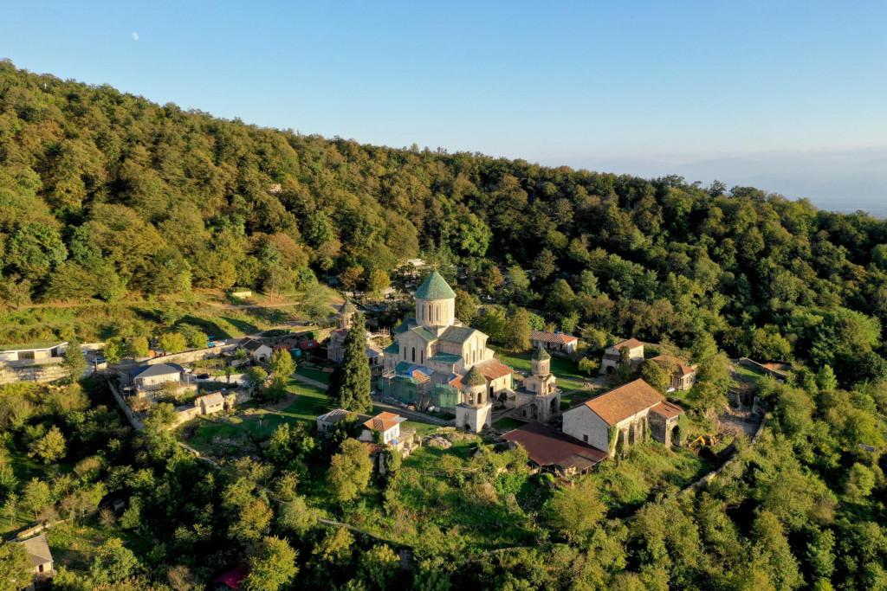

სამშენებლო მემკვიდრეობა
ტაძრები, ციხესიმაგრეები, ხიდები და გზები — დავითის მეფობის ხელშესახები კვალი, რომელიც დღემდეა შემორჩენილი.

ქვეყანა, რომელიც აშენდა თავიდან
ცენტრალიზებული ხელისუფლებისა და გამარჯვებული ომების შედეგად მიღწეულმა სტაბილურობამ დავითს საშუალება მისცა, ყურადღება მშვიდობიან მშენებლობაზე გადაეტანა. მისი ბრძანებით მთელ ქვეყანაში აშენდა ან განახლდა ათობით ტაძარი, მონასტერი, ციხე-სიმაგრე და საგზაო ინფრასტრუქტურა — ამან განაპირობა კიდეც მისთვის მიკუთვნებული ტიტული, „აღმაშენებელი".
მშენებლობა არ იყო მხოლოდ რელიგიური ან სამხედრო აუცილებლობა — ის ეკონომიკური და კულტურული პოლიტიკის ნაწილიც გახლდათ: გაძლიერებული ვაჭრობა, დაცული სავაჭრო გზები და გაერთიანებული სასულიერო სივრცე.
რა აშენდა დავითის დროს
გელათის მონასტერი და აკადემია
1106 წელს დაარსებული კომპლექსი ქუთაისთან — სამეფოს სულიერი და სამეცნიერო ცენტრი, დღეს იუნესკოს მემკვიდრეობის ძეგლი.
ციხე-სიმაგრეები
საზღვრებისა და მთავარი გზების დასაცავად აშენდა ან გამაგრდა ათობით ციხე-სიმაგრე ქვეყნის სხვადასხვა კუთხეში.
ხიდები და გზები
ვაჭრობისა და ჯარის სწრაფი გადაადგილებისთვის გაფართოვდა და გამტკიცდა სატრანსპორტო ინფრასტრუქტურა.
ტაძრები და მონასტრები
ეკლესიის რეფორმასთან ერთად აღდგა ან ახლად აშენდა მრავალი სასულიერო ნაგებობა ქვეყნის სხვადასხვა კუთხეში.
ქალაქების განვითარება
თბილისის დაბრუნების შემდეგ ქალაქი განახლდა და კვლავ ერთიანი სამეფოს დედაქალაქად ჩამოყალიბდა.
სავაჭრო ინფრასტრუქტურა
დაცული სავაჭრო გზები და ბაზრები ხელს უწყობდა ეკონომიკურ აღმავლობას მთელი სამეფოს მასშტაბით.